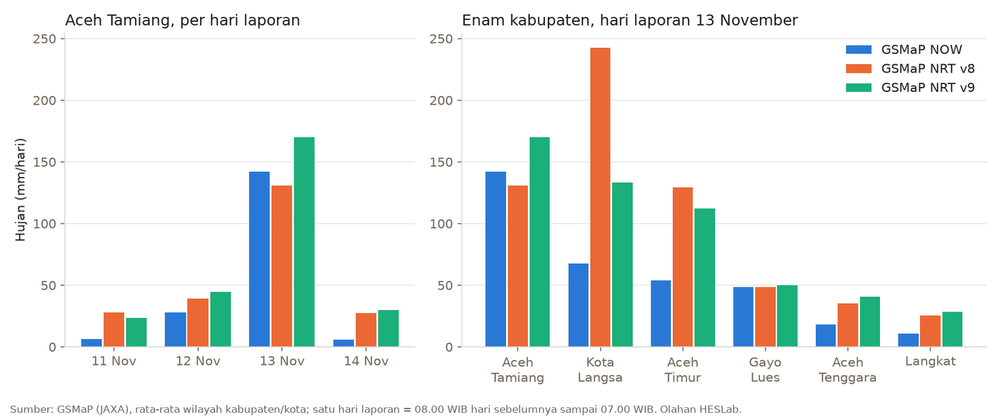
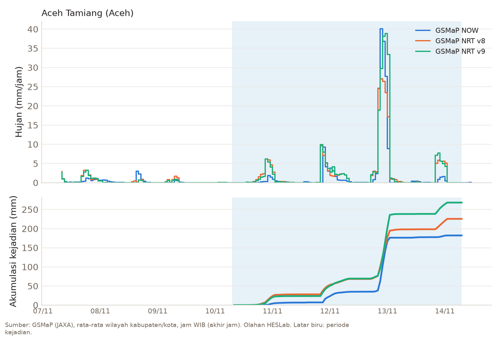
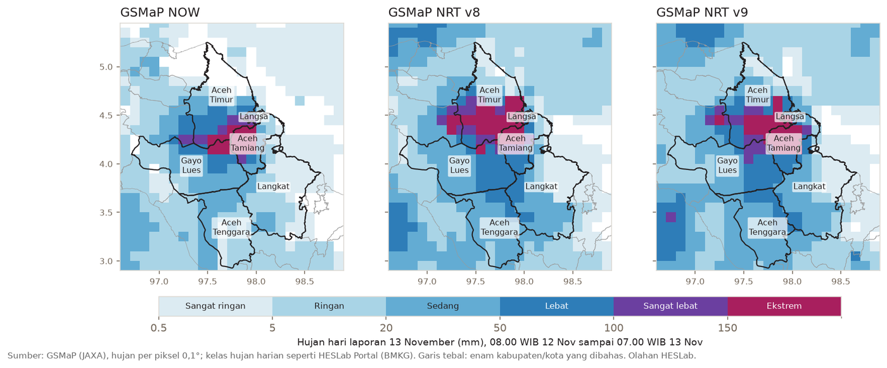

Satu tahun setelah banjir besar November 2025, Aceh Tamiang kembali terendam. Sejak Kamis 12 November 2026, Sungai Tamiang meluap ke permukiman, dan pada Jumat 13 November air masih setinggi sekitar satu meter di beberapa titik Kota Kuala Simpang. Tulisan ini melihat hujan yang mendahuluinya dari tiga produk satelit GSMaP yang terbit cepat (NOW, NRT v8, dan NRT v9), untuk Aceh Tamiang dan lima kabupaten/kota di sekitarnya.

Apa yang tercatat di lapangan
Data BPBD Aceh Tamiang mencatat 11 desa terendam di empat kecamatan: Kota Kuala Simpang, Bandar Pusaka, Tenggulun, dan Bendahara. Desa Perdamaian di Kota Kuala Simpang paling parah, dengan air sekitar satu meter di sejumlah titik dan jalan tidak bisa dilalui kendaraan (ANTARA; Metro TV). Warga sudah menaikkan barang-barang pada malam sebelumnya karena khawatir banjir seperti tahun lalu terulang. Selain luapan sungai, warga menduga drainase yang tersumbat lumpur sisa banjir November 2025 dan belum pulih ikut memperparah genangan.
BNPB melaporkan sekitar 150 orang mengungsi, sebagian ke hunian sementara, dan sekitar 100 rumah terendam. Tinggi muka air yang dicatat BNPB sekitar 40 cm, tanpa korban jiwa. Menurut BNPB, Kuala Simpang berada di hilir dan banjir datang dari air hulu yang meluap setelah hujan sangat lebat (ANTARA; detikcom).
Pada hari yang sama, banjir juga melanda Desa Sekoci di Besitang, Kabupaten Langkat, Sumatera Utara, yang berbatasan dengan Aceh Tamiang. Di sana tercatat 835 KK (3.155 jiwa) terdampak setelah sungai meluap akibat hujan lebat beberapa hari (detikcom). Angka itu milik Langkat, bukan Aceh Tamiang. Beberapa pemberitaan menggabungkan keduanya.
Apa kata satelit
Hujan dari tiga produk GSMaP dirata-ratakan per kabupaten/kota. Satu hari laporan adalah pukul 08.00 WIB hari sebelumnya sampai 07.00 WIB tanggal itu, sama seperti di HESLab Portal. Periode kejadian yang dihitung adalah 10 November pukul 08.00 sampai 14 November pukul 07.00 WIB.
Aceh Tamiang: hujan terkumpul dalam satu malam
| Hari laporan | GSMaP NOW | GSMaP NRT v8 | GSMaP NRT v9 |
|---|---|---|---|
| 11 November | 6 mm | 28 mm | 24 mm |
| 12 November | 28 mm | 39 mm | 45 mm |
| 13 November | 142 mm | 131 mm | 170 mm |
| 14 November | 6 mm | 27 mm | 30 mm |
| Total kejadian | 182 mm | 226 mm | 268 mm |
Ketiga produk sepakat soal waktunya. Hujan ringan sampai sedang turun pada 11 dan 12 November, lalu hujan terlebat datang pada malam 12 November, dari sekitar pukul 20.00 sampai 01.00 WIB. Dalam satu jam terderas, rata-rata seluruh kabupaten mencapai 40 mm (NOW), 27 mm (NRT v8), dan 39 mm (NRT v9). Dalam tiga jam terderas, angkanya 105 mm, 78 mm, dan 110 mm. Hari laporan 13 November saja menyumbang 58 sampai 78 % dari total kejadian. Waktu ini sejalan dengan berita: warga menaikkan barang pada malam hari, dan pada Jumat air masih menggenangi permukiman.

Jumlah totalnya berbeda. NRT v9 mencatat yang terbesar (268 mm), NOW yang terkecil (182 mm). NOW hampir tidak menangkap hujan ringan pada 11 dan 14 November, tetapi justru setara dengan dua produk lain pada jam-jam puncak.
Seberapa jarang?
Hujan kejadian ini dibandingkan dengan hujan terbesar tiap tahun sejak 2015 dalam arsip produk yang sama:
- Menurut NRT v8, hujan 24 jam terbesar kejadian ini (140 mm) berada di urutan kedua di antara 12 nilai: hujan 24 jam terbesar tiap tahun 2015–2025 ditambah kejadian ini. Yang lebih besar hanya banjir 26–27 November 2025, yaitu 432 mm dalam 24 jam, lebih dari tiga kali lipat kejadian kali ini. Di bawahnya ada Februari 2016 (128 mm) dan Februari 2022 (126 mm).
- Untuk hujan 3 jam, NRT v8 menempatkan kejadian ini (78 mm) di urutan ke-6 dari 12. Rekornya 89 mm pada April 2019; November 2025 mencatat 79 mm.
- Menurut NOW, yang arsip lengkapnya baru sejak 2018, hujan 24 jam kejadian ini (149 mm) berada di urutan ke-5 dari 9 nilai (2018–2025 ditambah kejadian ini). Di atasnya ada November 2025 (598 mm), Oktober 2021, November 2020, dan November 2023. Namun untuk hujan 3 jam, kejadian ini (105 mm) berada di urutan kedua, tidak jauh di bawah rekor 124 mm pada November 2025.
- NRT v9 baru tersedia sejak Oktober 2026, sehingga belum bisa diberi peringkat.
Jadi, dalam sepuluh tahun terakhir hujan sehari kali ini termasuk yang terbesar, walaupun masih jauh di bawah November 2025. Kedua produk berbeda soal peringkat persisnya: NRT v8 menempatkannya kedua untuk hujan 24 jam, sedangkan NOW menempatkannya kedua untuk hujan 3 jam. Banjir kali ini juga terjadi di sungai dan drainase yang menurut pemberitaan belum pulih dari kerusakan setahun lalu.
Kabupaten di sekitarnya
| Hari laporan 13 November | GSMaP NOW | GSMaP NRT v8 | GSMaP NRT v9 |
|---|---|---|---|
| Aceh Tamiang | 142 mm | 131 mm | 170 mm |
| Kota Langsa | 68 mm | 242 mm | 133 mm |
| Aceh Timur | 54 mm | 129 mm | 112 mm |
| Gayo Lues | 48 mm | 48 mm | 50 mm |
| Aceh Tenggara | 18 mm | 35 mm | 41 mm |
| Langkat | 11 mm | 26 mm | 28 mm |
Peta di bawah memperlihatkan hujan hari itu per piksel satelit (sekitar 11 × 11 km), bukan rata-rata kabupaten.

Ketiga produk menempatkan inti hujan ekstrem (lebih dari 150 mm sehari) di pesisir timur, di perbatasan Aceh Timur, Kota Langsa, dan Aceh Tamiang. Ke arah pegunungan (Gayo Lues, Aceh Tenggara), hujannya jauh lebih kecil. Di Gayo Lues ketiga produk hampir sama, sekitar 50 mm.
Yang berbeda adalah letak dan luas inti itu. Pada NOW, inti hujan ekstrem lebih kecil dan berada lebih ke selatan, tepat di atas Aceh Tamiang. Pada NRT v8, inti itu lebih luas dan bergeser ke utara sehingga hampir menutupi seluruh Kota Langsa. Karena itu Langsa menunjukkan perbedaan produk paling besar: NRT v8 mencatat 242 mm dalam sehari, sedangkan NOW hanya 68 mm, kurang dari sepertiganya. Langsa adalah wilayah kecil yang hanya tertutup beberapa piksel, sehingga pergeseran inti hujan sedikit saja sudah mengubah rata-ratanya banyak. Aceh Tamiang lebih stabil karena berada di bawah inti hujan pada ketiga produk.
Langkat tampak kecil di tabel (26–28 mm menurut NRT), padahal Besitang banjir. Peta menjelaskan sebagian sebabnya: sebagian besar Langkat hanya menerima hujan ringan malam itu, dan hujan lebat hanya mencapai bagian barat lautnya yang berbatasan dengan Aceh Tamiang dan Gayo Lues. Hujan itu tertutup oleh rata-rata kabupaten yang luas. Piksel satelit tidak cukup rinci untuk memastikan berapa hujan yang jatuh tepat di Besitang. Selain itu, hujan di Langkat lebih merata sejak 11 November (sekitar 30 mm per hari menurut NRT v8 dan v9), sesuai dengan berita tentang hujan lebat beberapa hari.
Mengapa produk berbeda
JAXA membagi produk GSMaP menurut jeda terbitnya. NOW terbit hampir tanpa jeda, NRT sekitar 4 jam setelah pengamatan, dan Standard sekitar 3 hari kemudian. Prinsipnya, makin cepat terbit makin kurang akurat. Versi algoritma (v8, v9) juga dapat memberi angka berbeda untuk kejadian yang sama. Penjelasan lengkap ada di halaman Memilih produk GSMaP.
Pada kejadian ini, ketiga produk sepakat soal kapan hujan terlebat turun, dan itu yang paling berguna untuk peringatan dini. Mereka berbeda soal berapa banyak, terutama di wilayah kecil seperti Langsa. GSMaP Standard untuk tanggal ini terbit sekitar 17 November dan biasanya paling dekat dengan pengamatan pos hujan.
Batasan
- Nilai adalah rata-rata wilayah kabupaten/kota dari satelit. Hujan di satu titik, misalnya di hulu Sungai Tamiang atau di Besitang, bisa jauh lebih besar. Satelit juga cenderung meremehkan hujan yang sangat lokal.
- Tulisan ini tidak memakai data pos hujan atau tinggi muka air sungai. Banjir juga dipengaruhi kondisi tanggul dan drainase, bukan hanya hujan.
- Peringkat hanya membandingkan hujan terbesar tiap tahun dalam arsip produk yang sama, tanpa analisis frekuensi, sehingga bukan kala ulang. Dengan pembanding 11 tahun (2015–2025), peringkat kedua belum berarti kejadian langka dalam jangka panjang.
- Pembanding dibatasi mulai 2015. Arsip NRT v8 yang lebih lama memuat lonjakan semu, misalnya 131 sampai 138 mm per jam selama tiga jam sebagai rata-rata seluruh Aceh Tamiang pada 30–31 Maret 2003, nilai yang tidak wajar untuk wilayah seluas itu. Pada 2015–2025, hujan satu jam terbesar di dalam setiap maksimum tahunan tidak lebih dari 39 mm.
Rujukan
- ANTARA, 13 November 2026. Aceh Tamiang kembali dilanda banjir susulan akibat hujan deras.
- ANTARA, 13 November 2026. BNPB: 150 warga mengungsi akibat banjir 40 cm di Aceh Tamiang.
- detikcom, 13 November 2026. Banjir landa Aceh Tamiang dan Langkat, ratusan rumah terendam.
- Metro TV, 13 November 2026. Banjir susulan setinggi 1 meter kembali rendam Aceh Tamiang.
- JAXA. GSMaP NOW, NRT v8, dan NRT v9, rata-rata per kabupaten/kota diolah HESLab.